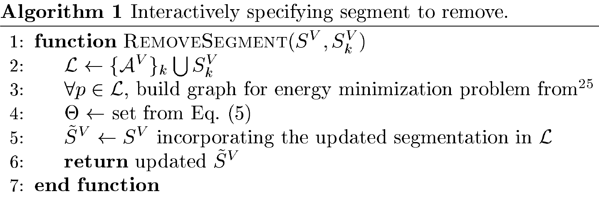
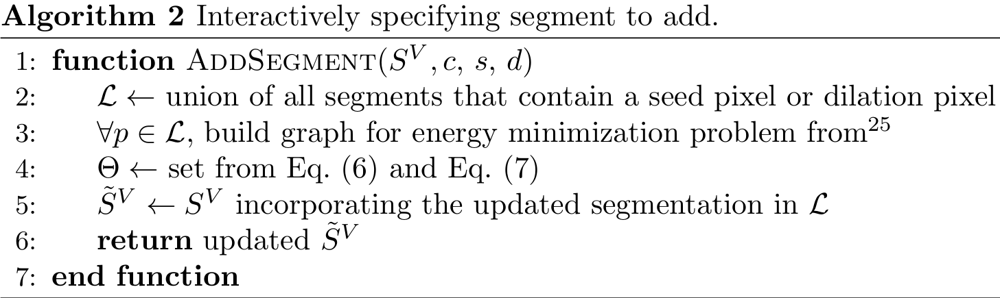

Interactive Grain Image Segmentation
using Graph Cut Algorithms
Jarrell Waggoner$^1$ / @malloc47 / waggonej@email.sc.edu,
Youjie Zhou$^1$,
Jeff Simmons$^2$,
Ayman Salem$^3$,
Marc De Graef$^4$,
Song Wang$^1$
$^1$USC, $^2$AFOSR, $^3$MRi, $^4$CMU
Notation
| $U$ | : Source image that is segmented |
| $V$ | : Target image that is not segmented |
| $S^U, S^V$ | : Segmentation of $U$ or $V$ respectivesly |
A segmentation $S^U$ is a partition of the pixels in $U$:
\[S^U = \{ S^U_1, S^U_2, \ldots, S^U_n \} \]
\[ U = \bigcup_{i=1}^{n} S^U_i \]
Propagation
We wish to obtain $S^V$ by propagating $S^U$ to $V$
In our previous work, this was done by using an energy minimization of the form
\begin{equation}
E( S^V ) = \sum_{p\in V}\Theta_p(S^V_i) +
\sum_{\{p,q\}\in\mathcal{P}^V_n} \Phi_{pq}(S_i^V , S_j^V)
\end{equation}
Unary and Binary Terms
\begin{equation} \Theta_p(S^{V}_i) = \left\{ \begin{array}{lcr} 0, & \textrm{distance}(p,S^U_i) < d \\ \infty, & \textrm{ otherwise} \\ \end{array} \right. \label{eq:theta} \end{equation}
\begin{equation} \Phi_{pq}(S^V_i , S^V_j) = \left\{ \begin{array}{lcr} 0, & i = j \\ \infty, & \{ S^U_i, S^U_j \} \notin \mathcal{A}^U \\ g( p, q ), & \{ S^U_i, S^U_j \} \in \mathcal{A}^U \\ \end{array} \right. , \label{eq:phi} \end{equation}
Limitations
- Must use heuristics to determine where to add new segments
- Topology constraints may not allow the removal of some segments
Goal:
Incorporate human interaction into the segmentation task to
- Remove Spurious Segments
- Add Missing Segments
Do this with minimal interaction, producing an updated segmentation $\tilde{S}^V_i$
Removal
Removal Input
We require only a single annotation (click) identifying a particular segment $S^V_k$ to be removed, which is done in two steps:
Identify Local Region
Identify local region for removal $\mathcal{L} = \{\mathcal{A}^V\}_k \bigcup S^V_k$ where $\{\mathcal{A}^V\}_k$ is all the segments adjacent to the segment to be removed
Update Energy Terms
Update the unary term to allow $S^V_k$ to be
labeled by its neighbors:
\begin{equation}\label{eq:remove}
\begin{aligned}
\forall p \in S^V_k ,& \quad \Theta_p(\tilde{S}^V_i) = \left\{
\begin{array}{lcr}
0, & S^V_i \in \{\mathcal{A}^V\}_k \\
\infty, & \textrm{ otherwise} \\
\end{array}
\right. \\
\forall p \notin S^V_k ,& \quad \Theta_p(\tilde{S}^V_i) = \Theta_p(S^V_i)
\end{aligned}
\end{equation}

Removal Algorithm
Removal: Live Demo
Live demo here
Addition
Addition Input
Require three elements:
- Center point $c$ for new region
- Seed radius $s$ around the center point which results in a region that is completely contained within the desired grain
- Dilation size $d$ around the center point which results in a region completely covering the desired grain
Local Region
$\mathcal{L} \gets$ union of all segments that contain a seed pixel or dilation pixel
Update Energy Terms
\begin{equation} \label{eq:d} \Theta_p(\tilde{S}^V_{n+1}) = \left\{ \begin{array}{lcr} 0, & \| p - c \| \leq d \\ \infty, & \textrm{ otherwise} \\ \end{array} \right. \end{equation} \begin{equation} \label{eq:s} \Theta_p(\tilde{S}^V_i) = \left\{ \begin{array}{lcr} \infty, & \| p - c \| \leq s \textrm{ and } i \neq n+1 \\ \Theta_p(S^{V}_i), & \textrm{ otherwise.} \\ \end{array} \right. \end{equation}
Addition Algorithm
Addition: Live Demo
Live demo here